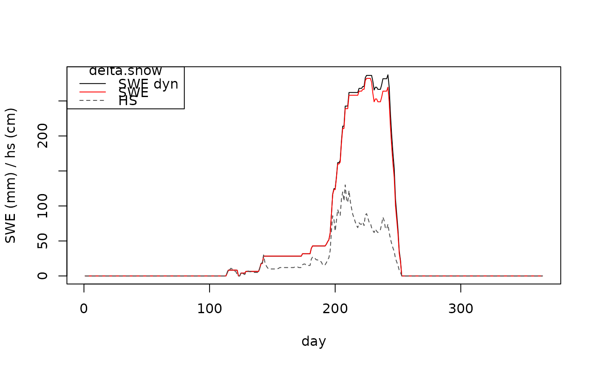

SWE modeling from daily snow depth differences
swe.delta.snow.RdModel daily values of Snow Water Equivalent solely from daily differences of snow depth.
swe.delta.snow computes SWE solely from daily changes of snow depth
at an observation site.
Compression of a snow layer without additional load on top is computed on
the basis of Sturm and Holmgren (1998), who regard snow as a viscous fluid:
$$\rho_i(t_{i+1}) = \rho_i(t_i)*(1+(SWE*g)/\eta_0 * exp^{-k_2*\rho_i(t_i)})$$
with \(\rho_i(t_{i+1}) and \rho_i(t_i)\) being tomorrow's and today's
respective density of layer i, the gravitational acceleration
\(g = 9.8ms^{-2}\), viscosity \(\eta_0\) (Pa) and
factor \(k2 [m^3kg^{-1}\)], determining the importance
of today's for tomorrow's density.
Usage
swe.delta.snow(
data,
model_opts = list(),
dyn_rho_max = TRUE,
layers = FALSE,
verbose = FALSE
)Arguments
- data
A data.frame with at least two columns named
dateandhs. They should contain date and corresponding daily observations of snow depth \(hs \ge 0\) measured at one site. The unit must be meters (m). No gaps or NA are allowed. Dates must be either of classcharacter,DateorPOSIXctand given in the formatYYYY-MM-DD. No sub-daily resolution is allowed at the moment (see details). Note that hs has to start with zero.- model_opts
An empty list which can be populated with model coefficients specific to the original delta.snow model (Winkler et al., 2021) or a version, where the maximum layer and bulk snow densities are allowed to vary with age (see details).
- dyn_rho_max
Logical. If
TRUE, the maximum bulk snow density is allowed to vary with layer age (see details). ifFALSE, the original delta.snow model is used.- layers
Should parameters snow depth, swe and age be returned layerwise? Can be
TRUEorFALSE.- verbose
Should additional information be given during runtime? Can be
TRUEorFALSE.
Value
If layears = FAlSE, a vector with daily SWE values in mm. If layers=TRUE, a list with layerwise matrices
of the parameters h (snow depth), swe and age is returned additionally to the SWE vector. The matrix holds dates on the x-axis and
layers on the y-axis. swe is in mm, h in m and age in days.
I
Details
If dyn_rho_max=TRUE, the bulk snow density varies with layer age. As activation function,
atan is used, where the S-curve symmetrically transitions from the lower to the upper density bound.
In that case, model_opts are extended by a lower density bound rho_l,
an upper density bound rho_h, a slope sigma and a midpoint mu,
which have been found via an optimization procedure (Winkler et al., 2021).
Be aware that also the other model coefficients do slightly change.
The following model coefficients must be provided:
dyn_rho_max=FALSE:
rho.maxMaximum density of an individual snow layer produced by the delta.snow model (kg/m3), \(rho.max > 0\)rho.nullFresh snow density for a newly created layer (kg/m3), \(rho.null > 0\). Currently optimized for daily snow depth observations.c.ovOverburden factor due to fresh snow (-), \(c.ov > 0\)k.ovDefines the impact of the individual layer density on the compaction due to overburden (-), \(k.ov \in [0,1]\).kExponent of the exponential-law compaction (m3/kg), \(k > 0\).tauUncertainty bound (m), \(tau > 0\).eta.nullEffective compactive viscosity of snow for "zero-density" (Pa s).timestepTimestep between snow depth observations in hours. Default is 24 hours, i.e. daily snow depth observations. No sub-daily values are allowed at the moment (see details).
dy_rho_max=TRUE:
Instead of a constant coefficient for rho.max, these four
parameters describe the smooth S-curve approximated by the atan trigonometric function.
sigmaSteepness or slope ofatanat its midpointmu, (-), \(sigma > 0\).muCentral midpoint in days, where the steepest transition occurs (days), \(mu > 0\).rho_hUpper density bound for a single layer and the whole snow pack (kg/m3), \(rho_h > 0\).rho_lLower density bound for a single layer and the whole snow pack, where the transition begins (kg/m3), \(rho_l > 0\).
All other coefficients are needed as well. Be aware however that they are slightly different.
The easiest way to call the original delta.swe model is swe.delta.snow(hsdata, dyn_rho_max = FALSE).
Note that parameters intrinsic to the dynamic density model provided with the original model
are silently ignored.
In principal, the model is able to cope with a sub-daily temporal resolution,
e.g. hourly snow depth observations. However, the model was fitted to daily observations,
and the model parameter rho.null reflects that. In other words, if the observation frequency changes,
rho.null should change as well. Currently, no sub-daily resolution is allowed.
References
Gruber, S. (2014) "Modelling snow water equivalent based on daily snow depths", Masterthesis, Institute for Atmospheric and Cryospheric Sciences, University of Innsbruck.
Martinec, J., Rango, A. (1991) "Indirect evaluation of snow reserves in mountain basins". Snow, Hydrology and Forests in High Alpine Areas. pp. 111-120.
Sturm, M., Holmgren, J. (1998) "Differences in compaction behavior of three climate classes of snow". Annals of Glaciology 26, 125-130.
Winkler, M., Schellander, H., and Gruber, S.: Snow water equivalents exclusively from snow depths and their temporal changes: the delta.snow model, Hydrol. Earth Syst. Sci., 25, 1165-1187, doi: 10.5194/hess-25-1165-2021, 2021.
Schroeder, M.et al. (2024) "CONTINUOUS SNOW WATER EQUIVALENT MONITORING ON GLACIERS USING COSMIC RAY NEUTRON SENSOR TECHNOLOGY A CASE STUDY ON HINTEREISFERNER, AUSTRIA", Proceedings: International Snow Science Workshop 2024, Tromsø, Norway, 1107 - 1114
Examples
data(hsdata, package = "nixmass")
swe_dyn <- swe.delta.snow(hsdata)
swe <- swe.delta.snow(hsdata, dyn_rho_max = FALSE)
plot(seq_along(hsdata$date), swe_dyn, type = "l", ylab = "SWE (mm) / hs (cm)", xlab = "day")
lines(seq_along(hsdata$date), swe, type = "l", col = "red")
lines(seq_along(hsdata$date), hsdata$hs * 100, type = "l", lty = 2, col = "grey30")
legend(title = "delta.snow", "topleft", legend = c("SWE dyn", "SWE", "HS"),
col = c("black", "red", "grey30"), lty = c(1, 1, 2))
